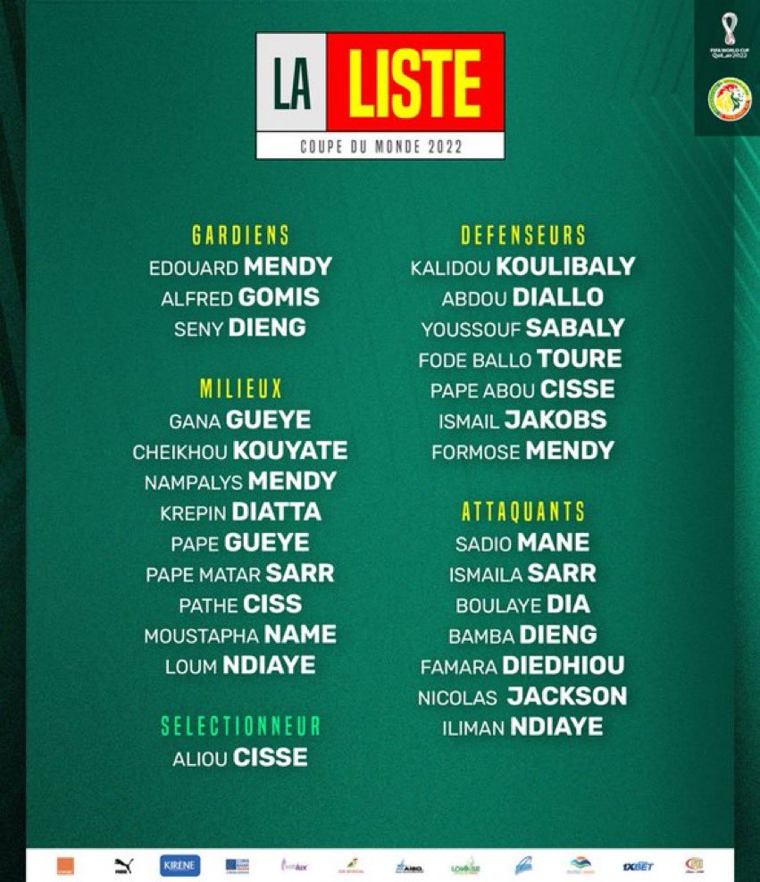
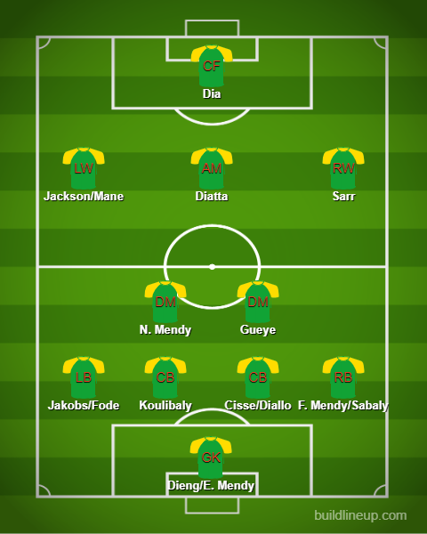

Squad Reaction - Senegal

Left: Goalkeepers, Midfielders, Manager/Coach Right: Defenders, Attackers
Well well well. This is an interesting selection from the coach. Sadio Mane will in fact be going to the World Cup despite being injured. They are hoping he will make a comeback during the tournament at the very least. With the Netherlands being the only possible threat, I think they have what it takes to finish second at least. In goal, we can’t look past Mendy but given his bad form for Chelsea(He is second choice now sadly), maybe the coach will trust one of the other two GKs. In defense, Koulibaly is a mainstay and is expected to lead them out after a successful Africa Cup of Nations triumph. Alongside him, it is between Diallo and Cisse. On the right, Formose Mendy is expected to start(Young and OTW) or Sabaly could start as well. On the left, it is between young Ismail Jakobs and the experienced Ballo-Toure. Moving onto midfield, Gueye is expected to hold the midfield alongside Mendy or Kouyate. In the frontline, Diatta could be at CAM. Ismaila Sarr could be a fix at RW. On the left, maybe Jackson could be there instead of Mane and finally up top, you could see Dia.
The lineup:
